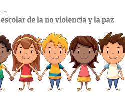

Mejores Estrategias

Existen diversas estrategias efectivas para prevenir y abordar la violencia escolar. Aquí te presento algunas de las más importantes:
1. Promoción de una cultura de paz y respeto: Educación en valores: Fomentar el respeto, la tolerancia, la empatía y la resolución pacífica de conflictos a través de programas educativos y actividades extracurriculares.
Creación de un clima escolar positivo: Promover un ambiente seguro, inclusivo y acogedor donde todos los estudiantes se sientan valorados y respetados.
Participación estudiantil: Involucrar a los estudiantes en la creación y aplicación de normas de convivencia y en la resolución de conflictos.
2. Intervención temprana y efectiva:
Detección de señales de alerta: Capacitar a docentes y personal escolar para identificar señales de violencia y acoso.
Protocolos de actuación: Establecer protocolos claros y efectivos para intervenir en casos de violencia, incluyendo la atención a víctimas y agresores.
Mediación y resolución de conflictos: Implementar programas de mediación para ayudar a los estudiantes a resolver sus diferencias de manera pacífica.